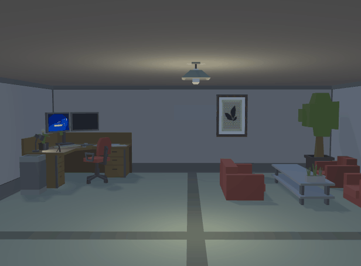
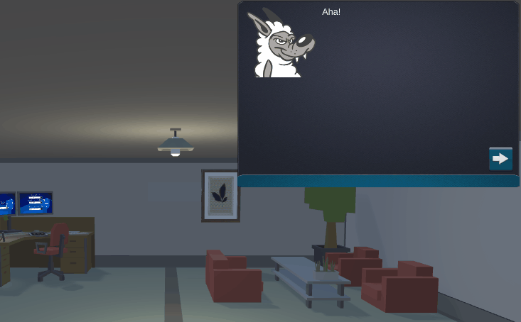

Passwords, Please
Passwords, Please is part of a campaign to create an educational puzzle game geared towards engaging players with ideas of how people store personal data and how others might take advantage of poor information security habits. Project began in March 2019 and is currently in ongoing development with a planned release by the university June 2020.
My contribution to Passwords, Please:
- Organized and updated clear and concise documentation, which can be found here
- Shifted puzzles and written content towards a more comedic style to expand the topic space and reduce puzzle homogeny
- Incorporating more humorous elements broadened our options when it came to how to portray educational content and prevented the puzzles from feeling too similar or duplicated.
- Gave game dialogue more substance and involked greater interest among players more than just lecturing definitions.
- Made the project feel less like a dry presentation and more like an interactive game.
 The start (pc password) and goal (safe) with no puzzle layers between
The start (pc password) and goal (safe) with no puzzle layers between- Consulted with contractors and suggested to expand the team to three people to allowed for faster concrete decision making by having a tie-breaker
- Sped up the production process considerably and offered a fresh design perspective
- Regular communications helped to better constrain our focus specifically to password security and recognizing phishing methods
- Solidified the vision of the game and also aligned well with the learning goals already developed by the university
Current Version
 Old Version
Old Version- Creating a method to design and implement puzzles in a way that emphasized the educational experience
- Project was initially designed as a first-person platformer
- Focus put on player manipulating environment to access new areas
- Playtest analysis showed players losing sign of game's intended educational purpose
- Players would hyper focus on clicking every irrelevant object or how to move around the world instead of the educational content
- Contractors wanted someway of directly informing the player about certain topics/actions
- Process:
- Parsed through player feedback to determine what aspects of gameplay were most irrelevant (keyboard movement, jumping)
- Suggested to pivot away from a first-person platformer in favor of a point-and-click structure
- Created a completely new prototype following this suggestion where clicking was the player's only means of moving/interacting
- Used the topic of security questions as a way to modularly separate puzzles by allowing players to solve puzzles in any order they choose
- Created a narrative system with monologue-style dialogue to provide written explanation of lessons directly to player
- Results:
- Players responed positively to simpler controls and spend less time idling
- Point-and-click structure paired extremely well with our lock-and-key/security question puzzle design
- Provided some greatly needed constraints on level and puzzle design in that there is only one room with a singular input action (clicking)
- Helped bring player focus back onto the educational message of the puzzles themselves rather than distracting mechanics or controls
Wolfrid will provide hints and explanations of cybersecurity habits as the player encounters them